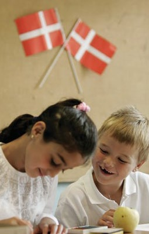
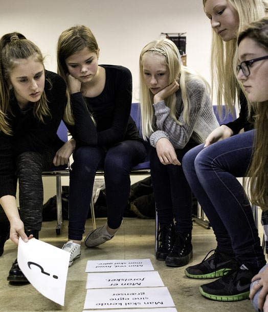
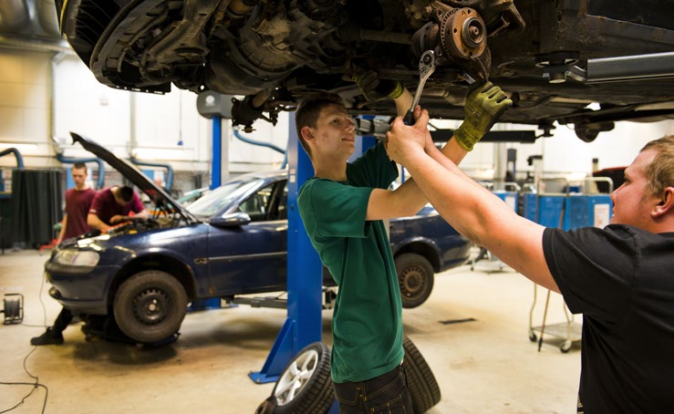

6.12 – SKOLEGANG OG UDDANNELSE I DANMARK
sidde 224
Uddannelse I Danmark
Uddannelsessystemet er en del af fundamentet under det danske samfund. Først og fremmest fordi uddannelse giver borgerne kundskaber, som har værdi i arbejdslivet. En af de vigtigste årsager til et samfunds økonomiske velstand og den enkeltes indkomst hænger sammen med tilegnelsen af kundskaber, som kan bruges på arbejdsmarkedet.
Arbejdsmarkedet i et rigt land som Danmark stiller derfor i høj grad krav til borgerne om uddannelse og dygtighed. Det gælder i forhold til grundlæggende kundskaber som at kunne læse og skrive dansk, regne, tale engelsk eller andre fremmedsprog. Og det gælder i forhold til mere specifikke kundskaber – både prak tiske og boglige/teoretiske alt afhængig af hvilken uddannelse, der er tale om.
Derudover er uddannelse vigtig, fordi det giver borgerne en fælles viden, iden titet og mulighed for at forstå deres hverdag og samfund.
Det danske uddannelsessystems historie går tilbage til middelalderen. I 1479 åbnede Københavns Universitet som landets første. Men ældst er dog de latin skoler, som omkring 1200 opstod i tilknytning til domkirkerne. Betegnelsen latinskole blev bevaret frem til 1903 for mange af de skoler, som forberedte de unge til universitetet. Efter reformationen i 1500-tallet blev børn undervist i Martin Luthers Lille Katekismus, en håndbog i den kristne tro. Det var den lokale præst eller degn (præstens hjælper), der underviste. Børnene gik ofte kun i skole en eller to dage om ugen.
I 1700-tallet blev der oprettet en del skoler. Fra slutningen af århundredet blev der dannet seminarier, som havde ansvaret for at uddanne lærere. Grundlaget for den danske folkeskole kom med skoleloven i 1814, hvor reglerne for under visning blev gjort ens for hele landet.
Der er ikke skolepligt i Danmark, men derimod ti års undervisningspligt. Det betyder, at alle børn skal modtage undervisning i ti år. Forældre kan frit vælge mellem den offentlige folkeskole og private skoler eller selv at undervise deres barn. Der er dog det krav, at eleven skal opnå samme faglige niveau som i folkeskolen, hvis barnet undervises i hjemmet eller på privatskole. Selv om der ikke er skolepligt, går næsten 100 procent af de danske børn i en skole. Folkeskolen omfatter en et-årig børnehaveklasse (ofte kaldt 0. klasse) og et ni-årigt grundlæggende skoleforløb. Der er endvi dere mulighed for et ekstra år i 10. klasse.Børn i en skoleklasse.
Læremateriale Til Indfødsretsprøven

sidde 225
Folkeskolen har ifølge folkeskoleloven følgende formål:
1. Folkeskolen skal i samarbejde med forældrene give eleverne kundskaber og færdigheder, der: forbereder dem til videre uddannelse og giver dem lyst til at lære mere, gør dem fortrolige med dansk kultur og historie, giver dem forståelse for andre lande og kulturer, bidrager til deres forståelse for menneskets samspil med naturen og fremmer den enkelte elevs alsidige udvikling.
2. Folkeskolen skal udvikle arbejdsmetoder og skabe rammer for oplevelse, fordybelse og virkelyst, så eleverne udvikler erkendelse og fantasi og får tillid til egne muligheder og baggrund for at tage stilling og handle.
3. Folkeskolen skal forberede eleverne til deltagelse, medansvar, rettigheder og pligter i et samfund med frihed og folkestyre. Skolens virke skal derfor være præget af åndsfrihed, ligeværd og demokrati.
Alle fag er fælles for piger og drenge, og eleverne undervises normalt klassevis og samlet gennem hele skoleforløbet. Skolen samarbejder tæt med forældrene, og foræl drene kan få indflydelse på deres barns skole ved at blive medlem af skolens bestyrelse og ved at deltage i forældremøder på skolen. Eleverne har ret til at danne et elevråd og til at vælge mindst to medlemmer til skolens bestyrelse, hvor de sidder sammen med forældrerepræsen tanter, repræsentanter for skolens personale og skolens ledelse.
Fra 0. klasse og frem til 7. klasse får eleverne ikke karakterer. Men fra folkeskolens 8. klasse får eleverne karakterer i en række fag mindst to gange om året. Skolen kan i nogle tilfælde give eleverne standpunktska rakterer i 6. og 7. klasse sammen med anden feedback. Efter 8. og 9. klasse aflægger eleverne prøve i mange fag. Efter 10. klasse kan eleverne også aflægge prøve i mange fag. Prøverne kan være både mundtlige og skriftlige.
Den karakterskala, der anvendes i Danmark, hedder 7-trins-skalaen, fordi den har i alt syv karakterer (trin). Der er to karakterer (-3 og 00) for ikke-beståede præstationer og fem karakterer for beståede præstationer (02, 4, 7, 10 og 12). Elever i 8. klasse der la
Elever i 8. klasse der arbejder sammen i grupper. Foto: Peter Klint/Ritzau Scanpix.
Læremateriale Til Indfødsretsprøven

sidde 226
Den højeste karakter er således 12, og den laveste karakter er -3. 7-trins-skalaen bruges overalt i det danske uddannelsessystem.
Det er frivilligt, om man vil videreuddanne sig efter de ti års undervisnings pligt. Arbejdsmarkedet i det danske samfund stiller dog i stigende grad krav til borgerne om uddannelse og dygtighed. Ti års skolegang er derfor ikke nok til at kunne få de fleste jobs.
Alle borgere i Danmark har adgang til mange forskellige uddannelser, og langt de fleste uddannelser er gratis for den enkelte borger. Hovedparten af unge i Danmark fortsætter efter grundskolen med en af de mange ungdoms uddannelser. Det gælder begge køn. En ungdomsuddannelse kan være rettet mod erhvervslivet eller mod videre uddannelse.
En erhvervsuddannelse kan for eksempel være inden for handel, kontor eller håndværk. Inden for social- og sundhedsområdet kan man blive uddannet pædagogmedhjælper eller social- og sundhedshjælper.Unge studenter med huer.
Unge studenter med huer.
Der findes flere forskellige gymna siale uddannelser, der giver adgang til videregående uddannelser, og som blandt andet omfatter det almene gymnasium (stx), handelsgymnasium (hhx), teknisk gymnasium (htx) og højere forberedelseseksamen (HF).
De videregående uddannelser varierer i længde alt efter, hvad man studerer. Videregående uddannelser kan være korte (2-3 år), mellemlange (3-4 år) og lange (5-6 år). Ved en kort videre gående uddannelse kan man for eksempel blive laborant, datamatiker eller byggetekniker. På de mellem lange videregående uddannelser kan man for eksempel blive pædagog, journalist, lærer eller sygeplejerske. En lang videregående uddannelse kan for eksempel være en universitetsuddannelse inden for naturvidenskab, sundhedsvidenskab, samfundsvidenskab eller humaniora. Man skal normalt have en gymnasial uddannelse for at blive optaget på en lang videregående uddannelse. Hvis man har en erhvervsuddannelse, er der også mulighed for at blive optaget på korte videregående uddannelser og nogle mellemlange videre gående uddannelser.
Læremateriale Til Indfødsretsprøven
sidde 227
Der er også mange tilbud om såkaldt efter- og videreuddannelse til voksne borgere i Danmark. Man taler ofte om muligheden for livslang uddannelse. Man kan uddanne sig, hvis man ønsker et nyt job, inden for et andet område, end man oprindeligt havde udannet sig i. Eller hvis der for eksempel er kommet nye maskiner på en arbejdsplads, som kræver særlige kompetencer. Voksne har mulighed for at tage en erhvervsuddannelse eller kurser på erhvervsskolerne. Voksne kan også gå til afsluttende prøve/eksamen i enkelte fag på folkeskole niveau eller HF på et af de mange voksenuddannelsescentre (VUC). Endvi dere er der mulighed for at tage en supplerende efter- og videreuddannelse på erhvervsakademier, professionshøjskoler og universiteter (fx en akademi-, diplom- eller masteruddannelse), ligesom der er forskellige uddannelsestilbud for voksne med læse- eller staveproblemer.
Flere Uddanner Sig I Længere Tid
Der er de seneste årtier sket en markant stigning i, hvor længe den danske befolkning er i uddannelsessystemet. Der er kommet mange flere elever og studerende ved de boglige uddannelser og langt færre ved de praktiske. I 1982 var der 36 procent af en årgang, som tog en gymnasial uddannelse. Det er vokset til 72 procent i 2023. Omvendt er andelen af en årgang, som tager en erhvervs faglig uddannelse, faldet fra 36 procent til 19 procent i samme periode.
Der er også mange flere, der får en lang videregående uddannelse. Således gennemførte ca. 6.000 studerende i 1990 en kandidatuddannelse, mens det i 2002 var ca. 10.000. I 2025 gennemførte ca. 29.000 studerende en kandidat uddannelse.
Der er bred enighed om, at det overordnet er positivt, at langt de fleste fort sætter deres uddannelse ud over den obligatoriske folkeskole. Men udviklingen har medført en række øvrige diskussioner om uddannelsessystemets indret ning. For eksempel mangler der faglært (manuel) arbejdskraft (for eksempel kokke, tømrere eller elektrikere), og derfor har der været en diskussion af, om for mange vælger gymnasiet og for få erhvervsskolerne.
En anden udfordring er, at der på nogle videregående uddannelser er for mange, som har svært ved at finde arbejde, når studiet er afsluttet. Der er samtidig for få, som vælger uddannelser som for eksempel pædagog og sygeplejerske eller tekniske og naturvidenskabelige fag som ingeniør eller datalog.
Derfor er der indført forskellige tiltag, som skal få flere studerende til at læse de uddannelser, som arbejdsmarkedet har mest brug for. For eksempel blev der i 2014 besluttet at indføre den såkaldte ”ledighedsbaserede dimensionering”, der lægger et loft over, hvor mange studerende, der kan optages på de uddannelser, hvor der gennem en periode har været høj ledighed (arbejdsløshed) for nyud dannede. Det gælder især fag inden for humaniora og dele af samfundsviden skab som for eksempel kunsthistorie, antropologi, filosofi eller musikvidenskab.
Læremateriale Til Indfødsretsprøven
sidde 228
Mere Praksis I Folkeskolen Og Gymnasiet
Ikke mindst som følge af udfordringerne med manglen på faglært (manuel) arbejdskraft, gennemgår uddannelsespolitikken i Danmark i disse år nogle væsentlige forandringer. Det ses både i folkeskolen og på gymnasierne.
Men hensyn til folkeskolen aftalte et flertal i Folketinget i 2024, at teori og oplæ ring i praktisk arbejde i højere grad skal gå hånd i hånd i folkeskolens undervis ning. Konkret skal alle elever i de større klasser fremover i fem dages erhvervs praktik på en arbejdsplads. Der etableres også mulighed for, at eleverne kan komme i såkaldt junior-mesterlære. Det betyder, at elever i 8. og 9. klasse kan vælge at gå tre dage i skole om ugen, mens de to sidste tilbringes med arbejde og oplæring i en lokal virksomhed. Herudover skal der være flere praktiske valgfag for de ældste elever, og forståelse for teknologi skal være en del af undervis ningen i hele folkeskoleforløbet.
I 2025 kom reformerne til gymnasiet, hvor der fra 2030 etableres en ny erhvervsog professionsrettet gymnasieuddannelse (epx). På epx skal eleverne mødes med en kombination af praktisk og boglig undervisning. Der skal være et tæt samarbejde med lokale virksomheder. Derfor skal gymnasier, som udbyder epx, have værksteder og laboratorier, hvor eleverne kan få praktiske færdigheder. Samtidig strammes adgangskravene til det almene gymnasium, som derfor må formodes at få færre elever fremover. Reformerne medfører også, at epx grad vist erstatter hf og 10. klasse.Elever på erhvervsskole i Hvidovre. Foto: Søren Bidstrup/Ri
Elever på erhvervsskole i Hvidovre. Foto: Søren Bidstrup/Ritzau Scanpix.
Læremateriale Til Indfødsretsprøven

Fonte: Læremateriale til Indfødsretsprøven, SIRI.